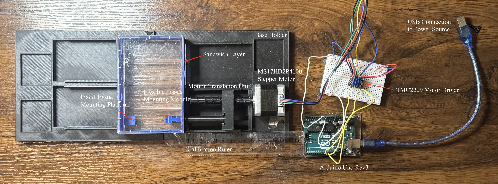
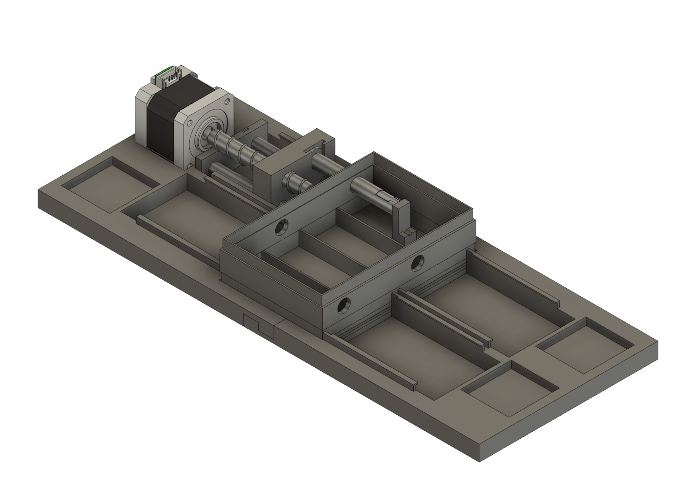
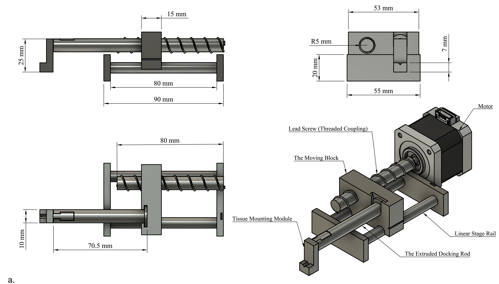
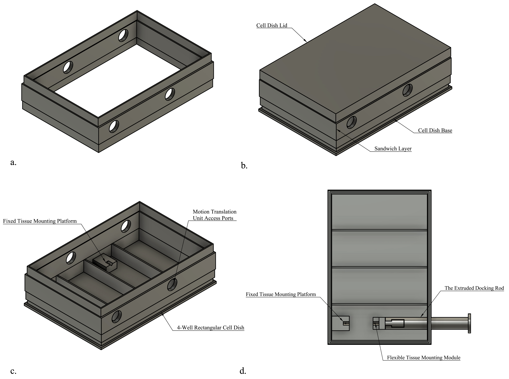
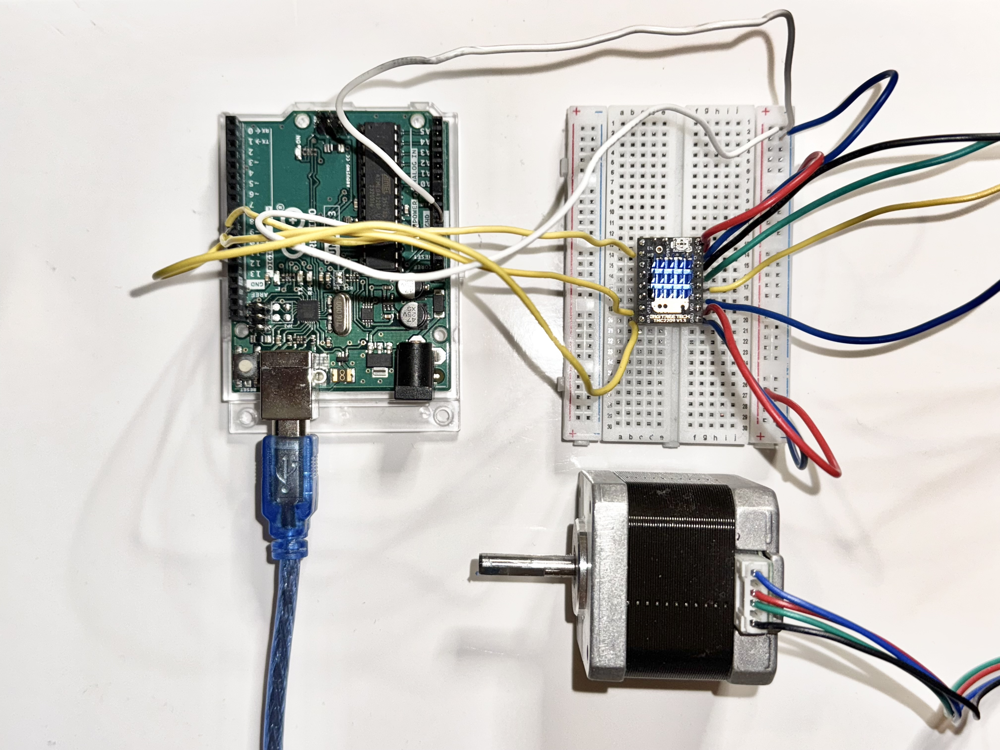

Design and Validation of a Uniaxial Pulsatile Stretch Conditioning Bioreactor System for Bioelectric Threads
Overview
Cardiac conduction disorders disrupt the heart's electrical pathways, leading to arrhythmia, heart failure, and in severe cases, sudden cardiac death. While tissue-engineered bioelectric threads — made from human induced pluripotent stem cell-derived cardiomyocytes (hiPSC-CMs) — offer a promising strategy to bypass damaged conduction tissue, their conduction velocity remains far below that of native adult myocardium. For my honors thesis at Brown University, I independently designed and validated a custom pulsatile stretch bioreactor system to apply cyclic mechanical loading to bioelectric threads, with the goal of promoting tissue maturation and enhancing their electrical conduction capability.

Background & Significance
Mechanical conditioning — particularly cyclic loading — has been shown to improve cardiomyocyte maturation by promoting sarcomere alignment and enhancing conduction velocity, mimicking the repetitive deformation experienced by cardiac tissue during each heartbeat. However, existing bioreactor systems are poorly suited for this application: most are designed for 2D cell monolayers or fixed tissue geometries, rely on clamping methods that damage tissue at attachment points, and offer limited customizability in their loading profiles. These gaps motivated the development of a new platform specifically designed for 3D fibrous tissue constructs like bioelectric threads, with the flexibility to support diverse conditioning paradigms and tissue formats.
Methods & Contributions

- Designed the full mechanical system in CAD, including a lead screw-driven motion translation unit, a modular tissue anchorage module using pin fixation to minimize tissue damage, and a sandwich plate system to maintain a closed sterile environment during conditioning.
- Developed Arduino C++ firmware with TMC2209 microstepping control and UART real-time communication, enabling software-programmable waveform customization with four distinct loading profiles: uniform cyclic, asymmetric cyclic, trapezoidal, and incremental.
- Calibrated displacement and velocity control via motion capture analysis (speed calibration R² = 0.9924), characterizing the relationship between software inputs and physical motor outputs.
- Validated four customized stretch waveforms through motion analysis, demonstrating the system's ability to independently control strain rate, amplitude, and dwell time within each loading cycle.
- Demonstrated long-term system stability through a 48-hour continuous operation test at 40% strain, achieving cycle-to-cycle amplitude variation below 1% CV throughout.



Research Skills
Mechanical design and CAD, embedded systems programming (Arduino C++), stepper motor control, motion capture and data analysis, experimental calibration, statistical analysis (one-way ANOVA), scientific writing.